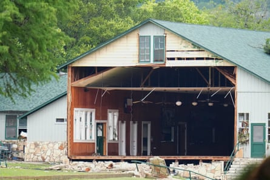
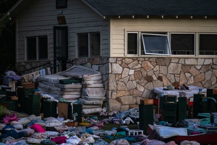

T he loss of 27 campers and counsellors from Camp Mystic to the Texas Hill Country flood may serve, at a terrible cost, to expand its considerable reputation across Texas and beyond. Even as the floods claimed more lives along the valley – more than 100 confirmed dead and 160 people unaccounted for as of Tuesday – the loss of several “Mystic Girls” has dominated the headlines.
The camp, which offers two four-week terms and one two-week term over the summer, has been the go-to summer camp for daughters of Texans for nearly a century. It’s so popular that fathers have been known to call the registrar to get their daughters on the list from the delivery room.
The camp, which spans more than 700 acres, has been widely described as an all-girls Christian camp, lending an image of baptisms in the river, but the religious component may be overstated: the camp is known as one of dozens along the Guadalupe River that Texan families send their young to escape the brutal heat of the lowlands.
Now at least one-half of Camp Mystic, which was due to celebrate its centenary next year, lies in ruins, torn apart by raging floodwaters. The sound of song and girls playing has been replaced by the sound of chainsaws and heavy equipment as 19 state agencies and thousands of volunteers work to search and clear mounds of flood debris along the river, including the muddied personal items of the campers.
Five days after the flood, the task along the valley has become a search-and-recovery operation: no one has been rescued from the river alive since Friday. In addition to the lost girls, Camp Mystic’s director, Richard “Dick” Eastland, a fourth-generation owner of the camp, died while attempting to bring five girls to safety.
“It tugs at the heart of anyone in the world that see the pictures of those little faces,” said Claudia Sullivan, author of a book on the Camp Mystic experience, Heartfelt: A Memoir of Camp Mystic Inspirations. “To know that they were there, having the time of their life, that they were innocent, and then to be taken away in such a tragic event – it takes you to your knees.”
Most alumni contacted by the Guardian indicated they were too upset to discuss the camp, or its reputation, as Texas Monthly put it in a 2011 article, for serving “as a near-flawless training ground for archetypal Texas women”.
It has served generations of Texas women, often from well-to-do or politically connected Texas families, including the former first lady Laura Bush, who was a counsellor, and the daughters and granddaughters of Lyndon Johnson, former secretary of state James Baker, and Texas governors Price Daniel, Dan Moody and John Connally.
T he camp may have been incorrectly characterized as a “Christian” camp. “That evokes the idea of church camp but that’s not the case,” said Sullivan. “It’s a private camp for girls that holds Christian values. When I was there we spent a lot of time talking about being kind to one another and having compassion, and there were people from other denominations and faiths.”
Camp Mystic is better understood, Sullivan added, as being in a place free from pressure.
“You’re in nature, in a beautiful setting, and really removed from the world”, said Sullivan. “It’s a place of joy and innocence – or was. My sense is that it will definitely be rebuilt, but it’s awfully early.”
The outpouring of grief and rush to support the community have been striking. A church memorial service was held on Monday in San Antonio for the “Mystic girls” who had been lost. Many dressed in the camp’s green and white, together in song and prayer.
A wall is missing on a building at Camp Mystic along the banks of the Guadalupe River.Photograph: Julio Cortez/AP
It was not possible to get to the camp on Tuesday, a tailback of 2.5 hours extended across the 7 miles from Hunt, the nearest hamlet, to Camp Mystic. At the season’s peak in July and August, the camp hosted 750 girls aged between seven and 17 years old – that’s more than half of Hunt’s population of around 1,300.
At Ingram, a riverbank town that also lost dozens from RV camps and homes to the flood, emergency workers and volunteers were pitching in, in many cases in the hope of recovering people still lost, and many bodies likely hidden under large piles of river debris, shattered homes and mangled possessions.
John Sheffield, owner of Ingram’s Ole Ingram Grocery, said the flood had not recognized social differences and nor would the recovery effort: “This is Americans taking care of Americans. There’s been such a tremendous outpouring of support and compassion.”
Down by the river, search crews were continuing to comb through debris and mud. Claud Johnson, the mayor of Ingram, was operating a digger up by Hunt. An EMS van pulled up, suggesting another body had been found. Helicopters continued to move overhead despite an incident on Monday when one was struck by a privately operated drone and was forced to make an emergency landing.
Three baristas from the Aftersome Coffee stand in San Antonio had come up to serve recovery workers. Allyson Bebleu said she had gone to church camp and it had given her some of her fondest memories.
“It’s not just for the wealthiest families, people of all types go to camp,” she said. “Everyone is putting themselves in the shoes of the Camp Mystic girls. It’s tragic.”
Camp Mystic was also the subject of a controversial video recently posed by Sade Perkins, a former member of Houston’s Food Insecurity Board. Perkins was “permanently removed” by John Whitmire, the Houston mayor, after she called Camp Mystic a “whites only” conservative Christian camp without even “a token Asian, they don’t have a token Black person”.
Richard Vela, whose 13-year-old daughter Maya was evacuated from a nearby camp, Camp Honey Creek, on Friday and was still too upset to discuss it, said Perkins’ comments “were not right. You don’t talk about people like that. There’s a lot of death going on and they still haven’t found everybody.”
B ruce Jerome, who was manning an outreach for flood survivors in Ingram, said he had known Jane Ragsdale, the director and longtime co-owner of Heart O’ the Hills Camp, in Hunt, Texas, who had died in the flooding.
“She was just genuinely wonderful,” Jerome said.
Campers’ belongings sit outside one of Camp Mystic’s cabins.Photograph: Eli Hartman/AP
Further down the track to the river was Josey Garcia, a Democratic representative for San Antonio in the Texas state house. She and her team were also picking through the debris, pointing out vast piles that still need to be be sifted through.
Garcia, a military veteran, said it was important to come “and collaborate with our neighbors here to recover those that are missing and help Kerr county clean up. We’ve had folks coming from Laredo and outstate Kansas to lend assistance. It’s showing the spirit of Texas – when it comes to lives being devastated its our duty to step.”
Garcia, too, rejected negative characterizations of Camp Mystic.
“I’ve been hearing a lot of the rhetoric that’s been going around. This is not the time for those types of distinctions. I don’t care who was at the camp. All I know is that there are parents and families that are missing their loved ones. Whether it’s rich Caucasian children or any other children, we’d still be there.”